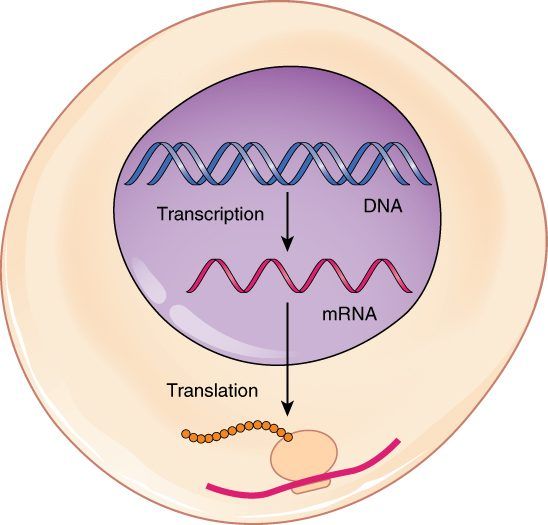
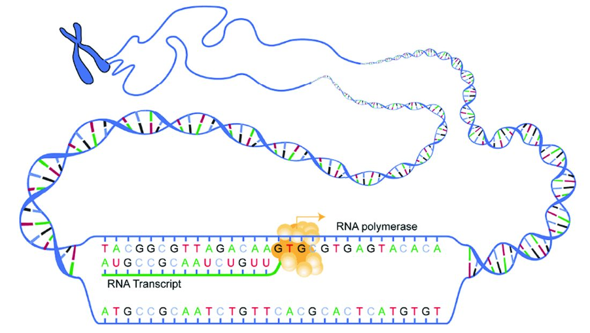
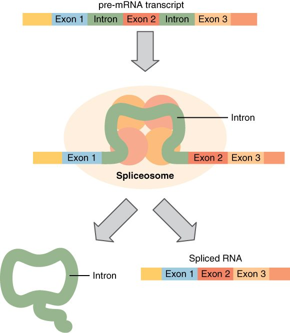
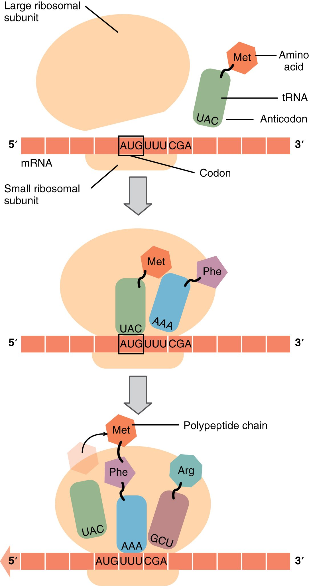
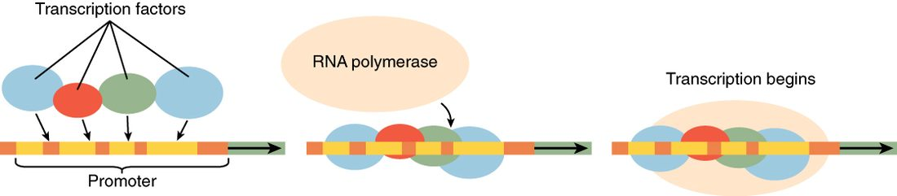

A gene is only a stored recipe. To use it, your cell copies the gene into a working message and then reads the message to build a protein. The copying step is called transcription and the reading step is called translation. This page follows protein synthesis from start to finish: what RNA is, how transcription and translation work, how the genetic code maps bases to amino acids, how a protein reaches the outside of the cell, how cells choose which genes to use, and what a mutation does.
The big picture: DNA to RNA to protein
Take a cell in your pancreas that makes a digestive enzyme. The recipe for that enzyme is a gene on one of its chromosomes. The DNA never leaves the nucleus, but the enzyme is built in the cytoplasm. So the cell makes a disposable copy of the gene, sends the copy out through a nuclear pore, and a ribosome reads it. Figure 1 shows the whole route.
The general rule: information flows from DNA to RNA to protein. One gene can be copied many times, and each copy can be read many times. That is how a single gene can yield thousands of protein molecules.

RNA: the working copy
RNA (ribonucleic acid) is the second kind of nucleic acid. Like DNA, it is a chain of nucleotides. The table below sets the two side by side.
| DNA | RNA | |
|---|---|---|
| Sugar | Deoxyribose | Ribose (one more oxygen atom) |
| Bases | A, T, G, C | A, U, G, C: uracil (U) replaces thymine and pairs with A |
| Strands | Two, as a double helix | One, which can fold back on itself |
| Length | A whole chromosome: millions of bases | Usually a copy of one gene: hundreds to thousands of bases |
| Where it works | Stays in the nucleus | Made in the nucleus; most works in the cytoplasm |
| How long it lasts | The life of the cell | Minutes to days, then enzymes break it down |
Three kinds of RNA build proteins:
- Messenger RNA (mRNA) carries the copy of one gene from the nucleus to a ribosome.
- Ribosomal RNA (rRNA) makes up much of each ribosome, along with ribosome proteins. The rRNA of the large half is the part that joins amino acids together.
- Transfer RNA (tRNA) is a small, folded RNA that carries one amino acid to the ribosome and matches it to the message.
Transcription: copying a gene into RNA
Transcription (trans- = across, script- = to write: rewriting in another form) copies the base sequence of one gene into RNA. It happens in the nucleus. Figure 2 shows the enzyme at work.
- Starting. Just ahead of each gene lies a promoter, a DNA sequence that marks where copying begins. Proteins called transcription factors bind there first, and then RNA polymerase binds. RNA polymerase is the enzyme that builds RNA.
- Unwinding. RNA polymerase opens a short stretch of the double helix, about a dozen base pairs, exposing the bases.
- Building. It reads one strand, the template strand, and links RNA nucleotides that pair with it: G with C, C with G, T with A, and A with U. The new RNA grows one nucleotide at a time, and the helix closes behind the enzyme.
- Stopping. At the end of the gene, RNA polymerase releases the RNA and leaves the DNA.
The other DNA strand is not read, but its sequence matches the new RNA, with T wherever the RNA has U.

Processing: cutting and capping the message
The first RNA copy is not ready to leave the nucleus. Most of your genes are split: the coding pieces are interrupted by long noncoding stretches.
- Exons (from expressed region: the parts kept in the finished message) are the pieces kept.
- Introns (from intragenic region: a stretch within the gene) are the pieces removed. In a typical human gene, the introns are far longer than the exons.
Splicing removes the introns and joins the exons end to end. A spliceosome (splice + -some = body), a large complex of small RNAs and proteins, does the cutting and joining (Figure 3). The cell also adds a chemical cap to the front end of the message and a long tail of A nucleotides to the back end. The cap and tail protect the mRNA from enzymes that would break it down, and the cap helps a ribosome find it. The finished mRNA then passes out through a nuclear pore.
Splicing is flexible. A cell can keep or skip certain exons, so one gene can give several related mRNAs, and so several related proteins. This alternative splicing happens in almost all human genes that have more than one intron.

The genetic code: three bases, one amino acid
Proteins use 20 amino acids. RNA has only 4 bases. One base per amino acid gives only 4 choices, and two bases give only 16. Three bases give 4 × 4 × 4 = 64 combinations, which is enough. So the message is read in groups of three.
A codon is a group of three mRNA bases. The genetic code is the table that says which amino acid each codon stands for. Its key features:
- 61 codons name amino acids, and 3 (UAA, UAG, UGA) are stop codons that end the protein.
- AUG is the start codon. It also codes for the amino acid methionine, so most new proteins begin with methionine.
- It is redundant. Most amino acids have more than one codon. The extra codons usually differ only in the third base. Leucine, for example, has six.
- It is unambiguous. Each codon names only one amino acid.
- It is nearly universal. Bacteria, plants and you use almost the same code. That is why bacteria given an intron-free copy of a human gene can make the human protein.
A tRNA carries its amino acid on one end. On the other end, it has an anticodon: three bases that pair with one codon. For example, the tRNA that carries methionine has the anticodon UAC, which pairs with the codon AUG.
Worked example: from DNA to amino acids. A gene's template strand reads 3′-TACGGATTCACT-5′. What does it code for? Use: AUG = methionine (start), CCU = proline, AAG = lysine, UGA = stop.
- Transcribe. Pair each template base: T→A, A→U, C→G, G→C. The mRNA is 5′-AUGCCUAAGUGA-3′.
- Split the mRNA into codons, starting at AUG: AUG | CCU | AAG | UGA.
- Translate each codon: methionine, proline, lysine, stop.
- The product is a chain of three amino acids: methionine–proline–lysine. The stop codon adds no amino acid.
- Check the tRNAs. The anticodons that pair with these codons are UAC, GGA and UUC. No tRNA pairs with UGA.
Translation: reading the message into protein
Translation (trans- = across, lat- = to carry: carrying the message into a new language) builds a chain of amino acids from the codons of an mRNA. It happens on ribosomes in the cytoplasm. Figure 4 shows the steps.
- Starting. The small half of a ribosome binds the mRNA's cap and slides along until it reaches the start codon, AUG. The tRNA carrying methionine pairs with it. The large half then joins.
- Reading. The ribosome holds the tRNA carrying the growing chain. Beside it is room for the next one: the tRNA whose anticodon pairs with the next codon enters there. A third spot lets the empty tRNA leave, and Figure 4 shows all three.
- Joining. The rRNA of the large half forms a peptide bond between the growing chain and the new amino acid. The chain now hangs from the newest tRNA.
- Moving. The ribosome shifts one codon along the mRNA. The empty tRNA leaves, to be loaded with another amino acid. Steps 2 to 4 repeat, a few amino acids per second.
- Stopping. At a stop codon, no tRNA fits. A release protein enters instead, the finished polypeptide is freed, and the ribosome's halves separate.
A message is rarely read by one ribosome at a time. As soon as the first ribosome moves off the start codon, another can start. A polyribosome (poly- = many) is one mRNA with many ribosomes working along it at once, each building its own copy of the protein.
The chain then folds into its working shape, often helped by other proteins. As you saw in the chemistry chapter, that shape sets what the protein can do.

The secretory pathway: shipping proteins out
Back to the pancreas cell. Its digestive enzyme must end up outside the cell, but a ribosome in the cytoplasm cannot push a protein through a membrane. Where a protein goes depends on a short address label in its own amino acid sequence.
- Proteins that work in the cytosol, the nucleus or the mitochondria are made on free ribosomes and released into the cytosol.
- Proteins that will be secreted, placed in the plasma membrane, or sent to lysosomes begin with a signal sequence: a stretch of about 15 to 30 water-avoiding amino acids at the front of the chain.
The secretory pathway is the route these proteins take through the endomembrane system (Figure 5):
- As the signal sequence comes out of a ribosome, a recognition particle binds it and pauses translation. It docks the ribosome on the rough ER.
- Translation resumes. The growing chain is threaded through a channel into the inside of the ER. Enzymes cut off the signal sequence. A membrane protein stays anchored in the ER membrane instead.
- Inside the ER, the protein folds, sometimes forms disulfide bonds, and often gains sugar chains. Proteins that fold wrongly are held back and broken down.
- Transport vesicles bud from the ER and fuse with the Golgi apparatus.
- The Golgi apparatus trims and adds sugars and sorts proteins by their tags: some to lysosomes, some to the plasma membrane, some for secretion.
- Secretory vesicles bud from the Golgi, move to the plasma membrane and release their contents by exocytosis. A membrane protein ends up in the plasma membrane when its vesicle fuses.
Gene expression: which genes a cell uses
Your pancreas cells make large amounts of digestive enzymes. Your skin cells carry the same genes for those enzymes but make none of them. Both cells have the same genome. What differs is which genes they use.
Gene expression is the process of using a gene to make its product. A gene that is being transcribed and translated is "expressed", or switched on. At any moment, a cell expresses only part of its roughly 20,000 protein-coding genes. Some genes, such as those for ribosome proteins, are on in nearly every cell. Others are on in only one cell type.
The main control point is transcription. A transcription factor is a protein that binds a specific DNA sequence near a gene and makes RNA polymerase more likely, or less likely, to start copying that gene (Figure 6). Each cell type carries its own mix of transcription factors, so each switches on its own set of genes. Signals from other cells can change that mix, which is how a cell changes what it makes.
Cells also control expression at other steps:
- Packing. Genes in tightly packed chromatin are hard for RNA polymerase to reach.
- Splicing. Alternative splicing picks which version of a protein is made.
- mRNA lifetime. A short-lived mRNA yields protein only briefly; a long-lived one keeps yielding it.
- Translation and breakdown. A cell can slow the reading of an mRNA, or tag a finished protein for destruction.
The proteome (prote- = protein, -ome = the whole set) is the full set of proteins in a cell at a given time. It changes from moment to moment. Because of alternative splicing and the changes made to proteins after translation, your cells can make many more distinct proteins than you have genes.

Mutations: changes in the sequence
A mutation (mut- = change) is a lasting change in the base sequence of DNA. Some arise from copying errors that escape proofreading. Others come from damage by ultraviolet light, radiation or chemicals that the cell fails to repair. Because the code is read in triplets, the effect depends on what the change does to the codons.
| Type | What changes | Example (mRNA codons) | Usual effect on the protein |
|---|---|---|---|
| Silent | One base, but the new codon names the same amino acid | GGC → GGU (both glycine) | None |
| Missense | One base, and the new codon names a different amino acid | GGC → AGC (glycine → serine) | One amino acid changed; from harmless to severe |
| Nonsense | One base turns a codon into a stop codon | UAC → UAG (tyrosine → stop) | A shortened protein, usually not working |
| Frameshift | One or two bases added or deleted | AUG CCU AAG → AUG CUA AG… | Every codon after the change is misread; usually not working |
| In-frame deletion or insertion | A multiple of three bases lost or added | Three bases deleted | One amino acid missing or added; the rest reads normally |
Alpha-1 antitrypsin deficiency shows how one small change travels through everything on this page. Your liver cells make alpha-1 antitrypsin and secrete it into your blood. In the lungs, it blocks protein-digesting enzymes released by white blood cells, which would otherwise damage the lung tissue. The most common disease-causing variant is a missense mutation: one base change swaps one amino acid for another. The protein is still transcribed and translated, but it misfolds in the ER. Much of it clumps and stays trapped there instead of moving on to the Golgi apparatus. So two problems follow. Blood levels of the protein fall, and the lungs lose their protection. And the protein trapped in the ER injures the liver cells themselves.
Not every mutation causes harm. Most of your DNA does not code for protein, so many mutations change nothing. A mutation in an egg or sperm cell can pass to a child. A mutation in any other body cell affects only that cell and the cells it later gives rise to.